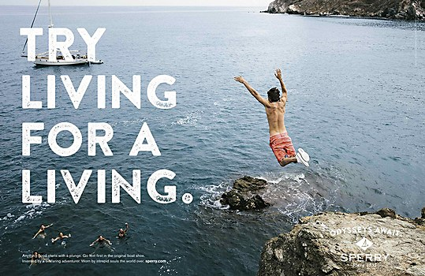
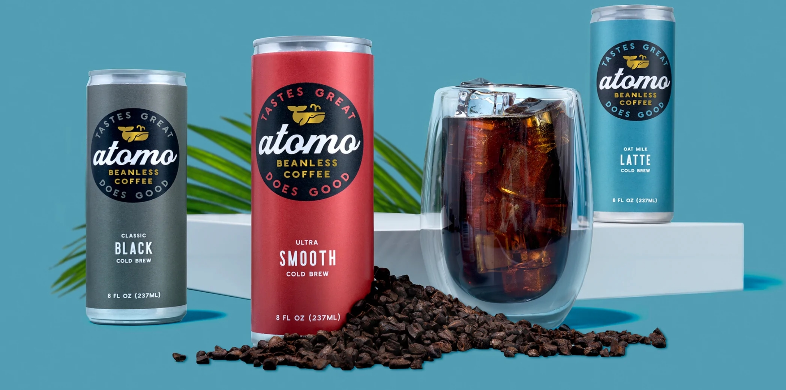
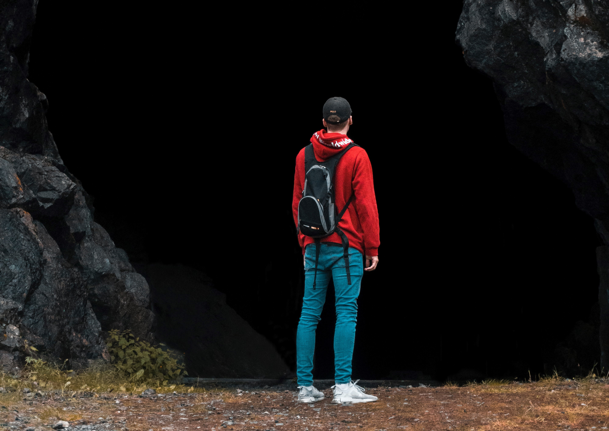

Inspriation

Inspiration for the text positioning and overall tone of the composition was taken from this Sperry Ad.

The image above is directly from the Atomo website and the image which I used to replicate their logo and branding for my project.

Found on Unsplash, this forest was the image that I used as the base for my composition.

The man in this image appears to be looking forward, which is how ads typically portray new beginnings or adventures. I used the man in this image in my composition to simulate that emotion.